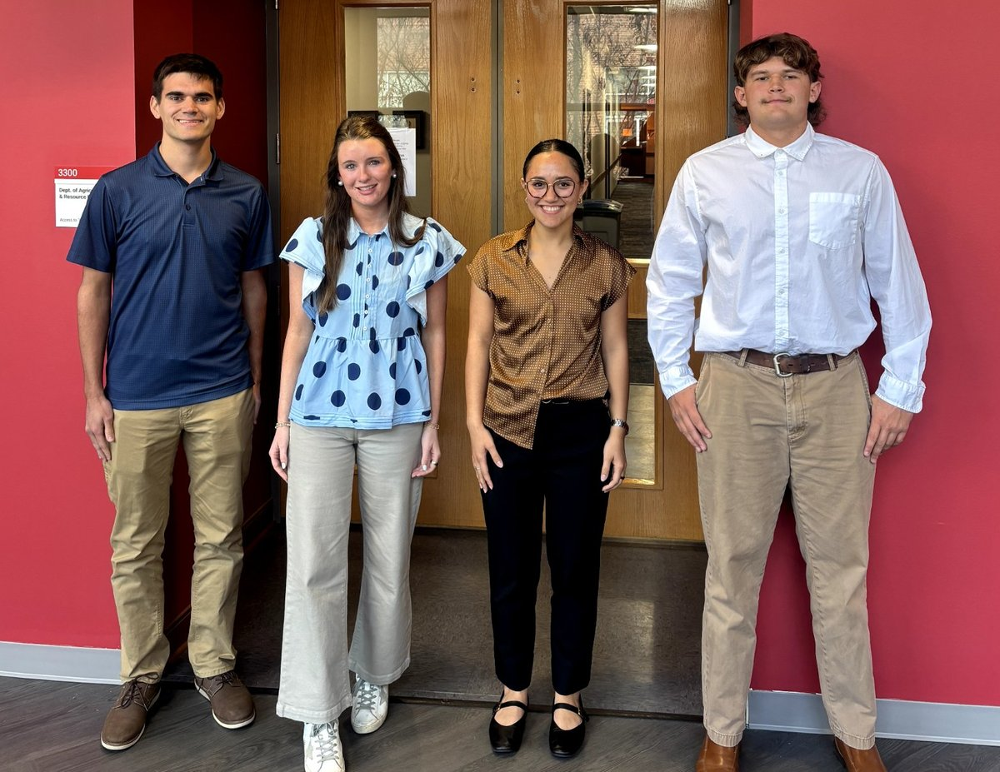
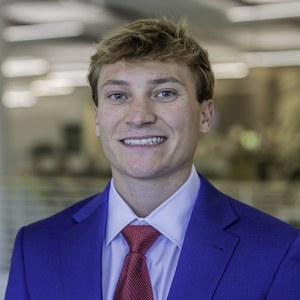
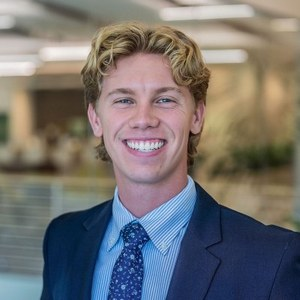
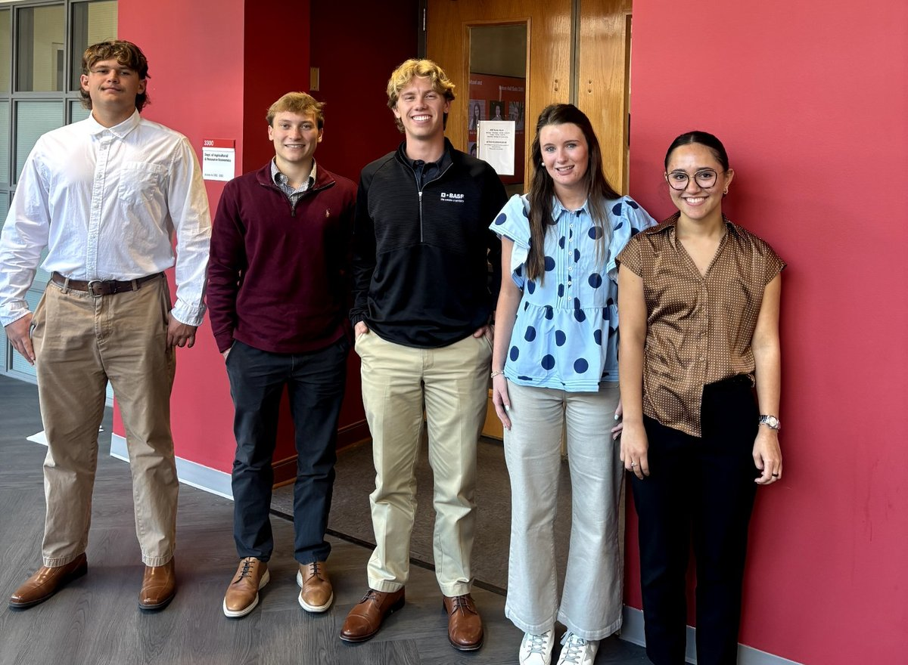

The four finalists outside the department office in Nelson Hall. From left: Caleb Ward, Alyson Sharp, Natalia Ruiz Pimentel, and Cooper Lanier. Photo by Matt Smith.
Nine ABM students interviewed on Friday, Nov. 13. No job was on the line, but the questions were real and the feedback was direct. Each student sat for 15 minutes with a panel of three: Dr. Julianne Treme, Dr. Michael Best, and Matt Smith.
Four advanced: Caleb Ward, Cooper Lanier, Natalia Ruiz Pimentel, and Alyson Sharp. Their reward was a second interview, this time with two people from industry.
Drew Kay returned to Nelson Hall six months after graduating, this time for BASF, a crop protection company. He ran the second round with Adam Loker. Both are in BASF’s Professional Development Program.


Photos courtesy of Drew Kay and Adam Loker
Cooper Lanier, a first-year student from Jacksonville, N.C., got one piece of advice from the panel after his first interview: put more emotion into his stories. He tried it in round two. “In my second one I used more emotion and they liked it,” he said.
Work on your first and last minute. Caleb Ward, of Franklinville, N.C., said the BASF interviewers told him to work on his introduction and his ending, “because that is what hiring managers remember most.”
Keep answers to 90 seconds to two minutes. Natalia Ruiz Pimentel, a junior from Harnett County, got that number from Adam. “I’ve done four ‘real’ interviews in the past month, and this was still extremely valuable,” she said.
Think before you answer. Cooper was asked how he would handle a disagreement with a teammate on a project. He took a moment to think instead of rushing and having to backtrack.
For Alyson Sharp, a freshman from Wilson, N.C., the second round was a different kind of interview. The BASF round “felt more conversational and gave me the opportunity to talk more about my personal experiences, goals, and future in agriculture,” she said. Next time she plans to take her time “instead of feeling like I need to rush.”

From left: Cooper Lanier, Drew Kay, Adam Loker, Alyson Sharp, and Natalia Ruiz Pimentel. Photo by Matt Smith.
Seth Thompson, a freshman from Whiteville, N.C., did not make the second round and would do it again. The hardest question for him was where he sees himself in five years. “It’s hard to say with confidence what you’ll be doing in five years when sometimes you don’t know what you’re doing now,” he said.
Dr. Best on why it matters: “Nobody wants to lose out on a dream job because of a few small mistakes that could have been fixed with a little practice.”
Missed this one? Watch The ABM Drop for the next chance to practice with faculty and employers.